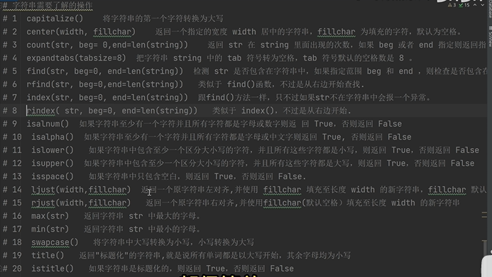
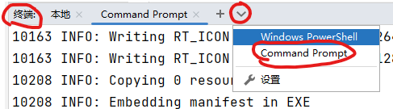
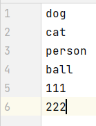
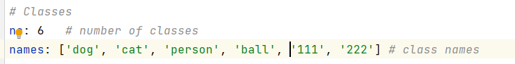

pthon_leran
没有系统学习python，记录使用过程中遇到的小知识点。
跟着b站up主小飞有点东西学习python。
py
1.使用方法
查看一个方法的使用：
- 关注输入输出类型
- 看官方文档>大于百度
- 查看需要的参数
不知道返回类型时，可以通过debug，或者print(type())
vscod使用conda环境，ctrl shift p， 输入Select Interpreter ,然后选择对应虚拟环境
2.pycharm
1.选中一个变量名，按alt+j自动选中后续，一键修改
2.python类
1 | #__init__相当于构造函数，实例化时会默认执行 |
3.compose
1 | # 第一种直接赋值，第二种缩放 |
4.print
1 | # 不换行 |
显示方式
| 意义 | |
|---|---|
| 默认 | 0 |
| 高亮显示 | 1 |
| 下划线 | 4 |
| 闪烁 | 5 |
| 反白显示 | 7 |
| 不可见 | 8 |
颜色
| 颜色 | 前景色 | 背景色 |
|---|---|---|
| 黑色 | 30 | 40 |
| 红色 | 31 | 41 |
| 绿色 | 32 | 42 |
| 黄色 | 33 | 43 |
| 蓝色 | 34 | 44 |
| 紫红色 | 35 | 45 |
| 青蓝色 | 36 | 46 |
| 白色 | 37 | 47 |
5.编码问题
1 | # coding:gbk |
6.python转义字符
1 | 字符串前加r 防止被转义，比如路径的\，可以加r解决 |
7.文件操作
1 | # coding:utf-8 |
8.lambda表达式
1 | res=(lambda x,y=1:x+y)(1,2) |
9.类型提示
1 | # py 解释性强类型动态 |
10.包
1 | # 一个文件作为包导入时__name__属性为model，作为执行文件时__name__为main |
11.目录结构
1 | ''' |
初识
1 | cmd中敲python首先在当前文件夹下找这个指令，没有就会去环境变量中从上往下找，所以多版本python可以通过分别在不同文件夹下，复制python.exe文件并重新命名，在分别将不同的目录添加到环境变量区分。 |
id 输出内存的映射，不是实际的堆内存地址
python解释器带小整数池(-5~256),这些值不在重新开辟内存，字符串也有
type 输出变量的类型
is 判断两个变量的内存地址是否相同
python没有常量，约定变量名全大写为常量(但还是可变)
‘’,””,等效，””””””,’’’’’’没有左值时，是多行注释，a=”””aaaa”””定义字符串
python单引号或双引号是成对出现的，但是区分’”,转义\
字符串与字符串可直接+（拼接），也可以*(代表重复多少遍)
列表[],取值[索引]，0,1,2是正序取1,2,3个元素，-1，-2，-3是逆序取倒数第1 2 3个元素
字典{},key:value,取值[key]，列表 字典可以相互嵌套
bool类型，0 None ‘’ [] {}为FALSE。其他都为true
python input把接收到的所有信息保存为str
python 强制类型转换 int(value) 只能转换纯数字，12.3转换不了
元组，通过()定义 内存地址不可变，但是嵌套可变类型中的数据内修改
字典 {} dict({}) dict{a=1,b=2}，
1 | # 指向同一块内存，id输出内存的映射，不是实际的堆内存地址 |
格式化字符串
1 | # 1.% |

py打包
pycharm终端启用环境的方法：

终端->选择cmd->activate
下载打包需要的包
pip install pyinstaller
在当前目录下启动环境
pyinstaller -F main.py(main.py为程序执行文件)
执行完毕会发现生成了 3 个文件夹：dist，build，samp.spec文件
在dist里面我们可以看到生成了一个exe可执行文件。
要把生成的exe文件从dist文件中移出来，和原主文件在同路径下，保持资源文件的相对路径
bug
1 | # 这样会引起程序运行后闪退，使用下面导包的方式，原因未知 |
py进程
1.py执行cmd命令
1 | from PyQt5.Qt import * |
2.进程通信-管道
1 | import os |
3.py启动进程
1 | # 向进程传入函数 |
py exe传入运行参数
1 | subprocess.Popen('test.exe --weights {} --cfg {} --data {}'.format(config_t['weights'],config_t['cfg'],config_t['data'])) |
py qt
1.自定义信号
1 | class main_widget(QWidget): |
2.画图qchart
1 | import random |
3.定时器qtimer
1 | import sys |
py 线程
1.控制线程
1 | import time |
2.线程id
1 | # 只有在线程里面才能获取线程 |
3.通过队列获取返回值
1 | import threading, queue, time |
4.通过线程池获取返回值
1 | # -*- coding: utf-8 -*- |
5.通过重写线程函数获取返回值
1 | # 定义一个MyThread.py线程类 |
6.控制线程数量
1 | import threading |
py文件操作
1.返回文件夹下最新文件或文件夹
1 | # 返回文件夹下最新的文件名或文件夹名，文件夹下没有文件，返回空 |
2.获取文件的属性
1 | statinfo = os.stat(path) |
3.写入yaml

1 | import os |
4.读取excl表格指定行或列
1 | import csv |
4.获取指定文件夹下的文件
1 | import os |
py tcp
1.测试某个端口是否打开
1 | import socket |
2.建立tcp连接
1 | # 服务器代码 |
py脚本
1.将标注文件中1类别的图片从数据集中提取出来
1 | import os |
py递归
1.修改编译器最大递归深度
1 | import sys |
2.递归
1 | def my_sum(i): |
py模块
1.time&datetime
1 | import time |
2.random
1 | import random |
3.os
1 | # 递归统计文件夹或文件的大小 |
1 | os.getcwd()# 获取当前工作目录 |
4.shutil
1 | import shutil |
5.sys
1 | import sys |
6.configparser配置文件
1 | import configparser |
7.subprocess
1 | import subprocess |
8.hash 哈希
1 | # 哈希算法 md5 sha1 sha256 sha512 |
9.re正则表达式
1 | #限定符 |
10.logging日志管理
1 | import logging |
py序列化
1 | # 序列化：把内存中的数据类型转成一种特定格式，可用于存储，或传输给其他操作系统 |
py猴子补丁
1 | # 在执行文件首次导入模块的时候，更改模块函数的内存地址 |